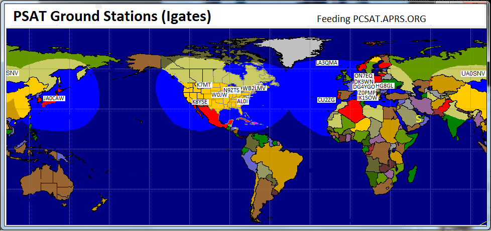
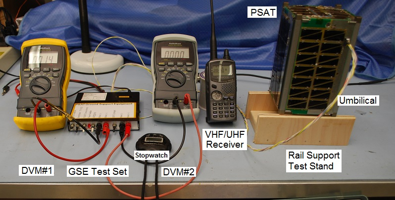

PSAT-2 - Standardizing Cubesat APRS Transponders
USNA Student Satellite Project 2016!
Bob Bruninga, WB4APR, Instructor, US Naval Academy (last name at usna dot edu)
Midshipmen students: Hannah, Teater, Driskell, Hanks (class of 2016)
**** This page has moved to psat2.html *** this page name better relates to the actual callsign PSAT2 and avoids confusion over the SSID digit (2) which has special meaning in the AX.25 protocol. GO there for all updates since May 2017.
PSAT-2 is manifest on SpaceX for a Sept 2017 launch (slip likely) and will join a number of Networked APRS transponders operating in the Amateur Satellite Service shown here that are, or will be, on Orbit in 2017 where all downlinks appear on the live APRS satellite downlink page and ISS downlink page:
OUTNET a global APRS channel on 3 GEO satellites!
PCsat-1 in orbit since 2001 semi-operational
ARISS on the ISS since 2007
Psat Operational since May 2015
BRICSAT-1 launched with PSAT, but insufficient power budget
QIKcom-1 IS ON ISS, but activation blocked by FCC SNAFU
QIKcom-2 with APRStt/Voice for launch Summer 2016
PSAT-2 With APRStt/Voice and PSK31 for launch spring of 2017
BRICSAT-2 APRS digi and thruster experiment for launch spring of 2017
ASTARS missions: Prior APRS missions on other spacecraft, ISS, Shuttle and MIR
The unique features of PSAT-2 shown in the CONOPS image diagram below, are the APRS transponder and the PSK31 transponder (both of which flew on PSAT-1 and the new APRStt (TouchTone) /Voice transponder (which was prototyped on QIKCOM-2 which lets everyone do APRS using any radio with DTMF keypad, not just those with APRS radios. There have been several iterations of the APRStt system in APRS over the years since 2001, but this application will be new in space and will help introduce everyone to this unique alternate APRS capability.
Read more about APRStt. To use the spacecraft with your DTMF mobile or handheld all you have to do is store your callsign in DTMF memory using this DTMF Callsign Encoder. Then to send your grid, you just send a DTMF memory. You can also send QSL's to other CQ,s and can send any of the other 99 messages from other memories. Here are some examples of the Voice Response to some of these DTMF uplinks:
You will notice the voice synthesizer on PSAT-2 is much better than the one on QIKCOM-2.
Low Cost Comms Board: Another feature of this cubesat is our development of a standardized cubesat communications card (shown below right) based on the popular Byonics MTT4B all-in-one APRS Tiny-Track4 module. We are standardizing the MTT4B onto a standard cubesat-104 board (and adding a 9600 baud UHF downlink if needed) to allow other schools to rapidly develop their own amateur radio cubesat projects. We call this board the SATT4.
Download a copy of our draft SATT4 Documentation.
. .

OVERVIEW: . PSAT-2 is a student senior engineering project built by a group of students at the Naval Academy for self training in smallsat technology. It is scheduled to fly on an STP-2 launch opportunity with a life span of several years. It continues the PCsat(2001) and PSAT-1(2015) missions noted above containing an APRS packet radio communications transponder for relaying remote telemetry, sensor and user data from remote users and amateur radio environmental experiments or other data sources back to Amateur Radio experimenters via a global network of internet linked volunteer ground stations. The APRS transponder also includes telemetry, and some command and control for the user modes. PSAT-2 also adds a unique experimental DTMF uplink on 145.98 MHz for users in the field who might not have access to an APRS radio.
Operations under ITU Rules: PSAT-2 will operate under the ITU rules of the Amateur Satellite Service. See how PSAT-2 design and operation fit entirely within the ITU International Amateur Radio RULES. The FCC does not issue licesnses for Amateur Radio Spacecraft (see public notice) because they are operated under the license of the individual amateur radio operator who is responsible to assure that both the design and operation are within the rules of the ITU as interpreted by the IARU. Our licensed control operator is Todd Bruner, WB1HAI in Annapolis.
APRS Up/Downlink . . 145.825 1200 baud APRS (shared with ISS, PCSAT, UO11 and others!)
DTMF Uplink . . . . 145.980 MHz (Voice confirmation down on 145.825 MHz)
PSK31 Downlink . . 435.350 MHz +/- 5 kHz FM (300 mw)
PSK31 Uplink . . . . . 28.120 MHz +2 kHz PSK31 SSB (25 watts into omni vertical authorized)
. . .
PSAT-2 Digipeater Aliases: To join the existing APRS satellites on orbit and operate as a seamless constellation, PSAT-2 supports the same APRSAT and ARISS generic aliases as the original PCSAT (NO44) PSAT-1 and the packet system on the ISS so that users do not have to change any parameters when using any of these three APRS transponders.
APRStt GRID MAP Encoding: The map table below encodes the 99 grids that have 99.99% of the worlds ham population into only 4 digits by converting the first two letters into two digits from the 00-99 table. You can see that our Maryland FM19 grid becomes 1819 in DTMF.


 DTMF Callsign Encoding: PSAT-2 (like QIKCOM-2) also cleverly compresses a 6 character call into only 10 digits following the 4 digit grid noted above. The first six digits of the call are the matching single keys for the callsign letters, EG: 924227. The next 4 digits encode the 2 bit location of each of the 6 call letters on each of the 6 keys used. For example, the 6 letters of WB4APR on the 6 keys are key locations 120112. Since each location is between 0 and 3, they can be encoded in 2 bits each (powers of 4) and assembled left to right into a 12 bit binary number. To convert to decimal, take the first 2 bits times 1024, the next 2 bits times 256, the next 2 bits times 64, the next times 16, the next times 4 and the last 2 bits times 1. Then add them up and get the 4 digit decimal "key code" (1558 in this example). This 4 digit decimal number we call your callsign key code. For those that are 12-bit-challenged, Bob Wood WA7MXZ has written an
DTMF Callsign Encoder to do this 4 digit number for you. For shorter calls, right-pad to 6 with spaces. A space is encoded as the "0" key with the key location code of 1. The entire Grid and call report adds a "*" at the beginning and a "#" at the end for the full 16 DTMF key report.
DTMF Callsign Encoding: PSAT-2 (like QIKCOM-2) also cleverly compresses a 6 character call into only 10 digits following the 4 digit grid noted above. The first six digits of the call are the matching single keys for the callsign letters, EG: 924227. The next 4 digits encode the 2 bit location of each of the 6 call letters on each of the 6 keys used. For example, the 6 letters of WB4APR on the 6 keys are key locations 120112. Since each location is between 0 and 3, they can be encoded in 2 bits each (powers of 4) and assembled left to right into a 12 bit binary number. To convert to decimal, take the first 2 bits times 1024, the next 2 bits times 256, the next 2 bits times 64, the next times 16, the next times 4 and the last 2 bits times 1. Then add them up and get the 4 digit decimal "key code" (1558 in this example). This 4 digit decimal number we call your callsign key code. For those that are 12-bit-challenged, Bob Wood WA7MXZ has written an
DTMF Callsign Encoder to do this 4 digit number for you. For shorter calls, right-pad to 6 with spaces. A space is encoded as the "0" key with the key location code of 1. The entire Grid and call report adds a "*" at the beginning and a "#" at the end for the full 16 DTMF key report.
DTMF Robustness: The combined 16 key combination is then stored in the DTMF memory of the users radio so that it can be transmitted in a single 3 second burst. Since the entire code is self contained, is always 16 keys, is sent at a standard speed, always begins and ends with known keys and all keys inbetween are decimal only, then any other combinations will be ignored. Also the usual failure mode of DTMF is duplication of digits or omission of digits which will be ignored by the mentioned constraints. A successful uplink will be ACK-ed by voice since the DTMF user cannot see the APRS downlink.
DTMF MESSAGES: The DTMF decoder will also accept an encoded standardized 2 digit message number (00 to 99) to select any of the 99 preloaded messages on the spacecraft. These messages are the standard ARL radiograms plus some other special ones (such as 40 for a QSO) for this satellite. To send one of these messages in the same 16 key DTMF memory use the following format. This is a 16 key DTMF string that begins with the "C" key to indicate a message, and then a 2 digit message number and then a 2 digit modifier xx, followed by the above encoded CALLSIGN. If the message is an actual ARL Emergency message, then the modifier should be 99 and the speech will include the word "EMERGENCY". If the modifer is anything over 90, then it will not say Emergency but will say TEST. If the modifier is less than 90, then the modifier will only be used if the template for that message has a blank in it for insertion of the modifier.
The "C" DTMF key indicates a message. The "MM" digits indicate the two digit message number, the "xx" digits are a numeric modifier that will replace any "_" blank in the messge text. Then the remaining CCCCCCxxxx finish off the transmission with the full encoded callsign as in the grid format.. See the Actual Flight list of messages and for background the standard ARL radiograms and a copy of the Maritime Emergency Codes that are also included.
Making a Contact: When you send your grid and call by DTMF the spacecraft will say "GRID FM19 from WB4APR, QSO number xx". The QSO number increments with each new station up to 99 and rolls over. To complete a contact with such a grid, send message number 40 (see above) with the QSO number xx. The spacecraft will say W3XYZ says message number 40 QSL your QSO number xx, my number is yy" to complete the contact. Of course, an APRS copy of each of these messages will also come down on the downlink for those with APRS radios. Since the QSO number will change with each contact, you can manually enter just Bxx and then hit another DTMF memory that has the remaining portion of the message and your call 40CCCCCCXXXX# to complete the QSO for a new QSO number. With practice you can do this rather quickly. Notice that this special "B" message format is slightly different from the "C" format in that the order of the MM message number and xx modifier are reversed so that you only have to manually enter the three keys "Bxx" to send this special QSL message.
PSK-31 Transponder: Also exciting is the 3rd flight of the PSK-31 transponder (Brno University) that was pioneered on PCSAT-2, and PSAT-1. It permits dozens of simultaneous PSK31 users to operate full duplex and maintain a continuous group texting session throughout the pass. Operating full duplex on PSK-31 is new and it will take a while for users to learn how to do this well. As a guide, KO6TD has prepared the table at right of capabiites of typical PSK31 user software. Only WinPSK can operate full duplex but others can run two instances of the same software, one for transmit and one for receive.
. . .
 PSK31 Doppler Compensation: Fortunately, Andy, K0SM has written a
TX-only program that not only lets your run full-duplex with your existing PSK31 downlink, but it also pre-compensates your uplink for Doppler as shown below! You can see his uplink coming down as a straight track while others are showing Doppler. Most PSK31 clients can compensate for up to 1 Hz/sec of Doppler on the downlink, but Andy's program makes your signal constant. Other users without compensation, can drift from 1 to 6 Hz per second depending on where they are relative to the track of the satellite.
PSK31 Doppler Compensation: Fortunately, Andy, K0SM has written a
TX-only program that not only lets your run full-duplex with your existing PSK31 downlink, but it also pre-compensates your uplink for Doppler as shown below! You can see his uplink coming down as a straight track while others are showing Doppler. Most PSK31 clients can compensate for up to 1 Hz/sec of Doppler on the downlink, but Andy's program makes your signal constant. Other users without compensation, can drift from 1 to 6 Hz per second depending on where they are relative to the track of the satellite.
PSK31 Transponder is ON for users! The on-orbit Brno Universtiy PSK31 transponder on the existing PSAT-1 is fully operational on every orbit, since it is the primary mission of PSAT-1. A medium gain UHF beam can easily copy the waterfall downlink horizon to horizon. Since uplink is on HF and downlink is on UHF, everyone can operate full duplex and transmit to ALL while reading text from everyone on the channel. You can also copy your own signal! in the downlink at the same time. The table above shows which PSK31 software can operate full duplex or can run 2 instances at the same time.
See Brno University PSK31 transponder details.
APRS Digipeater: When the DIGI is on, the satellite TOCALL is APDIGI. When it is doing DTMF (APRStt) mode, the TOCALL will be APDTMF. The ALIASes are the usual, ARISS, APRSAT (and WIDEn-N if you forget). PSAT-2 will also have the ability to report its own APRS position in standard APRS format so users can see where it is on the front panel of their APRS radios.
LIVE Telemetry Downlink: will also be captured on Steve Dimse's, K4HG original pcsat.findu.com web page. APRS packet is a secondary mission compared to DTMF and PSK31, so the digipeater may be turned off if power is low. But beacons, telemetry and Bulletins will always remain. The five Telemetry Equations (after the serial number) in standard APRS telemetry format are:
Format: . . . . . T#SSS, VVV, I I I, XXX, YYY, ZZZ, 00011X00
VVV. . . Bus Volts in hundredths
I I I . . . . Bus Current in mA
XXX. . . Temp +Z where T = -1.26E-6*X^3 +0.0028*X^2 -2.215*X + 625
YYY. . . Temp - Z where T = -1.26E-6*X^3 +0.0028*X^2 -2.215*X + 625
ZZZ . . . TempBat where T = -2.57E-6*X^3 +0.0061*X^2 -5.149*X +1475
In the 00011X00 field, only the X has meaning. 0 = DIGI ON, and 1 = Digi off

Worldwide APRS Ground Station IGates: Although almost all of the dozens of 145.825 MHz APRS-IS (internet system) ground stations can hear the ISS downlink with simple antennas, the map above shows the fewer ground stations that have actually IGated PSAT packets. Although these are the same stations listening to 145.825 as the ISS, the ISS station is 14 dB stronger (10W versus 0.35W for PSAT). So only IGates with good weak signal performace are successful with PSAT. As you can see, we need IGates in Hawaii, India, China and the Southern Hemisphere. PSAT-2 will operate at 2 Watts and be 7 dB stronger than PSAT-1.


Best Satellite IGATE Antenna: The most practical IGate antenna is an OMNI (so it does not wear out or require rotators) and it has high gain above about 30 degrees and less gain on the horizon (where it cannot hear a 350 mW satellite anyway). See (SatGate Antennas) Not only is the gain higher at the higher elevations, but the satellite is also 6dB closer, thus giving a combined gain of nearly 13 dBi similar to an OSCAR class beam. Another reason for minimizing gain on the horizon is the Donut-Hole NULL effect where any IGate that hears a user station direct will send that into the APRS-IS first and that will cause the subsequent space digipeated packet to be a DUPE and will be ignored by all IGates. So a mobile or terrestrial omni is the worst omni (maximizes gain on horizon and usually has a null around 20 or 30 degrees which is where the satellite is best located!
The best Satellite OMNI Igate antenna is a non-gain 1/4 wave vertical (19.5" over a large ground plane). Even better (+2 dB) is a 3/4 wave vertical (58" high) over a large ground plane shown here. It has nearly 7 dBi gain above 30 degrees, plus the +6 dBi closer range gain and not much at all on the horizon. It is best placed low in the yard to further minimize horizon gain as shown here.
 BACKGROUND: . PSAT-2 follows on to several previous student project satellites which contain an APRS packet radio communications transponder for relaying remote telemetry, sensor and user data from remote users and amateur radio environmental experiments or other data sources back to Amateur Radio experimenters via a global network of internet linked volunteer ground stations. The data transponder also includes all telemetry, command and control for a complete cubesat. A secondary transponder supports multi-user PSK31 text messaging users via a Brno University transponder.
See the
Psat paper at the 2010 AMSAT symposium
The image at right is the test equipment used during integration testing of PSAT-1.
Operations in the Amateur Satellite Service: All of the transponders on PSAT are operated in the Amateur Satellite Service to encourage amateur radio students, educators and experimenters around the world to contribute additional satellities to this constellation on 145.825 MHz or to build interesting self motivated remote sensors suitable for the uplink channel. See our ocean or bay oceanographic data buoys for examples. This kind of Amateur Radio experimentation fits well in the ITU rules (see PSAT-2 justification) for operating in this service and well serve our educational and outreach goals for student projects encouraging young people to be interested in Science, Technology, Engineering and Math.
APRS Packet Transponder: The APRS packet transponder is an AX.25 Packet Radio Relay similar to what is flying on PCsat and the ISS. This ongoing mission in space on the original PCsat is now over 12 years old and pioneered this very popular operating mode via the ISS since 2006. Both of these missions deliver packets to users worldwide via the global network of volunteer ground stations feeding the two downlink capture pages: psat.aprs.org and ariss.net. These pages display live maps such as the one below, of the most recent user position data and capture all message traffic between users. See the APRS link budgets. In addition there is also a PSK31 transponder as noted below.

 PSK31 Transponder: The Brno University
PSK31 Multi-user FDMA transponder experiment is
similar to what we flew on
PSAT-1 and
PCSAT2 missions.
See the full PSK31 design concept here.
This text messaging transponder allows messaging between up to 30 modest ground stations simultaneously.
In the example waterfall display above, 10 users are clearly visible.
Each user transmits a 31 Hz wide narroband transmission within the 3 kHz wide transponder, and all
can be seen simultaneously via the UHF FM downlink. Uplink stations do not need gain antennas on the
HF uplink but can use a vertical monopole antenna and 75 Watt SSB transmitter to give the transmit antenna profile
as shown above.
To calculate the PSK31 link budgets
we combined the user TX antenna gain profile with the variation in range gain from the horizon to
over 60 degree elevation as shown here at right. The combination gives an uplink power variation
per user of less than +/- 4 dB over 90% of the duration of the pass.
PSK31 Transponder: The Brno University
PSK31 Multi-user FDMA transponder experiment is
similar to what we flew on
PSAT-1 and
PCSAT2 missions.
See the full PSK31 design concept here.
This text messaging transponder allows messaging between up to 30 modest ground stations simultaneously.
In the example waterfall display above, 10 users are clearly visible.
Each user transmits a 31 Hz wide narroband transmission within the 3 kHz wide transponder, and all
can be seen simultaneously via the UHF FM downlink. Uplink stations do not need gain antennas on the
HF uplink but can use a vertical monopole antenna and 75 Watt SSB transmitter to give the transmit antenna profile
as shown above.
To calculate the PSK31 link budgets
we combined the user TX antenna gain profile with the variation in range gain from the horizon to
over 60 degree elevation as shown here at right. The combination gives an uplink power variation
per user of less than +/- 4 dB over 90% of the duration of the pass.
Unique Power System: Unlike the standard Silicon cells on PSAT-1, PSAT-2 uses the very expensive UTJ multi-junction cells that cost 100 times more. But for the cost, these will deliver twice the power. With three UTJ cells per side, the peak solar voltage is 7.2 volts which is a perfect match to our 5 cell NiCd battery. Since only 2 cells fit on the top and bottom, those panels use a DC/DC boost regulator to get to the 7.2 volts. The power per panel is about 3.5 Watts, but with the rectaqngular spacecraft averages about 4 Watts in the sun. Reducing for eclipses provides about 2 Watts orbit average power.
Attitude Dynamics and Control System (ADCS): Unlike the single axis torque coil on PSAT-1, PSAT-2 has a 3 axis torque coil system as well as sun sensors and a magnetometer. The torque coils are printed on the top and bottom of every solar panel PCB for a total of 4 coils in series in each plane at about 70 Ohms. This is a perfect match to the CPU's I/O bits that can drive the coils directly and still be within the 35 mA limit per pin. The ADCS system is for studnet experimentation and is not mission critical. To maintain a very slight spin about the Z axis the solar cells are offset with a reflective strip on one edge to produce an unbalanced solar radiation pressure on each side. This should create a fractional RPM spin (the Spin on PCsat now, 12 years in orbit is maintained between about 0.6 and 0.8 RPM by this method). And PSAT-1 typically spins between 1 and 5 RPM with this method. The spin is needed to maintain thermal balance and not let one side get too hot facing the Sun.
. .

PSAT Position Reporting: PSAT-2 will send its APRS position once every minute so that its location appears on the front panel of all APRS user radios so they can know which way to point their antennas. But rather than flying a very expensive space rated GPS, we simply use the fixed orbit timing and a 95.16 minute Mean Anomoly clock synced to the orbit period and a table of LAT/LONG values to downlink its position based on the minuute in the 95.16 minute orbit. Every orbit when the clock tics over, the longitude is shifted by the oribtal longitude increment as shown above.
Continetnal Bulletins: Since the above scheme allows PSAT to know where it is, then it can use that information to customize its bulletins to match the continent that it is over at the time. We have programmed PSAT to send unique bulletins over the LAT/LONG continental boxes shown above. There are three possible beacons for each continent. They are alternated every minute.
Global Experimental Data Channel: PSAT is the space segment of this initiative to encourage both new satellite construction in support of this experimental data channel and lower cost buoy and sensor experimentation at other schools as shown below. Today, the only AMSAT that is available for no cost to schools with such experiments are the Naval Academy's PCSATs. But with ParkinsonSAT we hope to commence an ongoing full time presence in space to continue this support of the 145.825 data uplink channel for future experiments. To this end we hope other schools to either build additional 145.825 MHz relay satellites and/or to build experimental sensors. The complete comms system including data transponder fits on one 3.4 inch square card shown here. We hope that ParkinsonSAT will be the Egg in this chicken-egg conundrum.
The 2016 Initial Design: Below will be the more descriptive images and links to the details of PSAT-2 design. But until we finish the new cubesat-standard-bus design for PSAT-2, we are retaining some of the olderlinks to the portions of the original PSAT-1 design that are similar.
Earlier 2008 and 2010 DESIGN Documentation
{kind=link}
{kind=link}
{kind=link}
{kind=link}
{kind=link}
{kind=link}
{kind=link}
{kind=link}
{kind=link}
{kind=link}